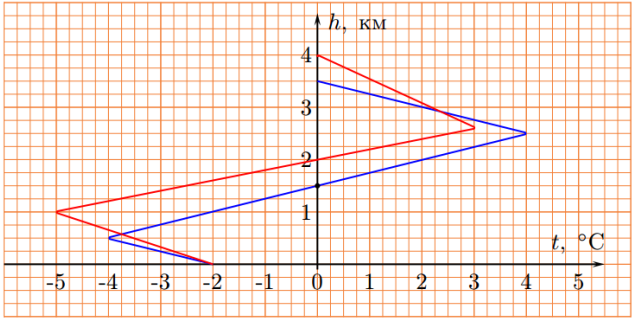

Y18 (2018) — English translation
At the beginning of November 2016, precipitation in the form of freezing rain was observed in Moscow and the region, resulting from a temperature inversion, when the temperature at the Earth's surface is lower than at an altitude of 2-3 km. The characteristic dependences of temperature on height are shown in the figure. A “drop” of freezing rain near the ground is an icy spherical shell containing water inside

Consider that at the altitude where the temperature passes through $0^{\circ}\mathrm C$ (for example, $1{,}5~\text{км}$ in the blue graph), all raindrops are liquid at a temperature $T_0=0^{\circ}\mathrm C$. Heat removal from a unit surface of a droplet per unit time satisfies the empirical relation:
Evaporation and condensation, as well as changes in the radius of the drop due to crystallization, are neglected. Assume that the thermal conductivity of ice and water is high enough so that the temperature at the center of the drop is equal to the temperature at the surface.
Source: https://pho.rs/p/3044